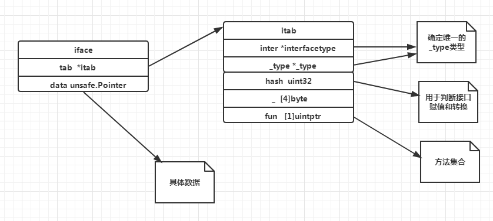

反射是什么
反射其实就是通过变量动态获取其值和类型的一种技术，有些语言是支持反射的比如python, golang,有些是不支持反射的比如C++
前文我们分析过interface的结构，无论空接口还是有方法的接口，其内部都包含type和value两个类型，type指向了变量实际的类型
value指向了变量实际的值。而反射就是获取这两个类型的数据。
golang总类型分为包括 static type和concrete type. 简单来说 static type是你在编码是看见的类型(如int、string)，
concrete type是runtime系统看见的类型
反射只能作用于interface{}类型，interface{}类型时concrete类型
下面介绍golang反射的基本用法
reflect.ValueOf与reflect.TypeOf
1 | var num float64 = 13.14 |
golang 提供了反射功能的包reflect, reflect中ValueOf能够将变量转化为reflect.Value类型，reflect.TypeOf可以将变量
转化为reflect.Type类型。
reflect.Type 表示变量的实际类型。
reflect.Value 表示变量的实际值。
reflect.Value类型提供了Kind()方法，获取变量实际的种类。
reflect.Value类型提供了Type()方法，获取变量实际的类型。
relfect.Type 同样提供了Kind()方法，获取变量的种类。
上面程序的输出结果为
1 | reflect type is float64 |
可见通过反射可以获取变量的实际类型和数值，那么Kind和Type有什么区别呢？这个区别在于结构体，之后再谈。如果您只需要了解
反射的基础知识，看到这里就可以了，下面介绍反射复杂的玩法。
通过reflect.Value修改变量
如果一个变量是reflect.Value类型，则可以通过SetInt,SetFloat,SetString等方法修改变量的值，但是reflect.Value必须是
指针类型，否则无法修改原变量的值。可以通过Canset方法判断reflect.Value是否可以修改。
另外如果reflect.Value为指针类型，需要通过Elem()解引用方可使用其方法。
我们继续上面的例子补充代码。
1 | var num float64 = 13.14 |
输出如下
1 | reflect type is float64 |
可以看到通过rptrvalue.Elem().SetFloat(131.4)成功修改了num的数值。
而且通过打印rptrvalue的Kind为ptr指针种类，Type为float64的指针类型
注意，如果通过rptrvalue.SetFloat(131.4)会导致panic崩溃，因为此时rptrvalue为指针类型
需要通过Elem()解引用才可以使用方法。这个Elem()相当于C++编程中解引用的*
通过Interface()将relect.Value类型转换为interface{}类型
我们可通过Interface()将relect.Value类型转换为interface{}类型，进而转换为原始类型。
继续上边的代码，我们完善代码
1 | var num float64 = 13.14 |
输出如下
1 | reflect value is 13.14 |
可以看出rvalue.Interface().(float64)将reflect.Value类型转换为float类型
rptrvalue.Interface().(*float64)将reflect.Value类型转换为float指针类型
在这两个转换前，我们不是已经将num值修改为131.4了吗？
为什么rvalue.Interface().(float64)转换后还是13.14呢？
因为rvalue为值类型不是指针类型，只是存储了num未修改前的一个副本，其值为13.14，
所以转化为float类型值仍为13.14。
而rptrvalue为指针类型，指向的空间为num所在的空间，所以转化为float指针后指向num所在空间。
num修改了，rptrvalue指向空间的数据就修改了。
到目前为止第一个例子就完整的写完了。
Kind和Type有何不同？
我们先定义一个结构体Hero
1 | type Hero struct { |
接着我们实现一个函数，通过反射判断结构体类型
1 | func ReflectTypeValue(itf interface{}) { |
上面函数参数为空接口，可以接受任何类型数据，内部调用了反射的TypeOf和ValueOf转化，判断参数类型和种类
我们在main函数测试下
1 | ReflectTypeValue(Hero{name: "zack", id: 1}) |
输出如下
1 | reflect type is main.Hero |
看的出来，Hero结构体的Kind为struct,Type为main.Hero,因为Hero定义在main包，所以为main.Hero
结构体的值为{zack 1}
Hero指针的Kind为ptr,Type也为*main.Hero，值为&{zack 1}
这其实就是Kind和Type的区别，Type为具体的类型，Kind为种类，比如指针ptr，结构体struct,
整形int等。
下面我们进行更复杂的结构体遍历和探测
通过reflect.Value的NumField函数获取结构体成员数量
reflect.Value类型提供了NumField()函数，用来返回结构体成员数量。我们先实现一个函数遍历探测
结构体成员。
1 | func ReflectStructElem(itf interface{}) { |
ReflectStructElem函数首先通过reflect.ValueOf获取reflect.Value类型，在通过reflect.Value类型
的NumField获取实际结构体内的成员个数。
rvalue.Field(i)根据索引依次获取结构体每个成员，elevalue类型为reflect.Value类型，所以可以通过
Kind,Type等方法获取成员的类型和种类。
我们在主函数调用上面的方法
1 | ReflectTypeValue(Hero{name: "zack", id: 1}) |
Hero为我们上个例子定义的结构体，输出如下
1 | element 0 its type is string |
可见通过reflect.Value的NumField是可以遍历探测结构体成员的值得。
下面我们试试在main函数中加入这样一段代码
1 | ReflectStructElem(&Hero{name: "Rolin", id: 20}) |
这次ReflectStructElem的参数为Hero指针类型,运行发现程序崩溃了。
我们查看下NumField的源码
1 | func (v Value) NumField() int { |
可以看出NumField内部判断v必须为Struct类型，然后取出v的typ字段转化为结构体指针进行操作。
所以NumField只能用在探测结构体类型,指针，int，float，string等类型都不能使用NumField方法。
那如果我们想遍历结构体指针类型怎么办？比如*Hero类型？
答案是可以的，通过Elem()解引用即可。我们再实现一个函数，用来探测结构体指针类型成员变量。
1 | func ReflectStructPtrElem(itf interface{}) { |
ReflectStructPtrElem先通过reflect.ValueOf接口类型转化为reflect.Value类型的rvalue,
此时rvalue实际类型为结构体指针类型，所以通过Elem()解除引用,这样rvalue.Elem()为Hero类型。
接下来就可以遍历和获取结构体成员了。main函数中添加如下代码
1 | heroptr := &Hero{name: "zack fair", id: 2} |
输出
1 | element 0 its type is string |
到目前为止，我们学会了通过反射获取基本类型(int,string,float等)的变量，也可以获取结构体类型和
结构体指针类型的变量，以及探测其内部成员。接下来我们考虑修改结构体成员的值。
通过reflect.Value的NumMethod获取结构体方法
我们要修改结构体成员变量的值，可以通过之前的Set方法吗？答案是可以的，但是要求比较苛刻，要求反射的对象
是结构体指针，并且修改的成员也是指针类型才可以。而对于非指针类型的成员变量怎么修改呢？
我们先完善函数 ReflectStructPtrElem
1 | func ReflectStructPtrElem(itf interface{}) { |
上面代码添加了功能，获取结构体指针类型的变量的第二个成员，判断是否可以修改。测试下
1 | heroptr := &Hero{name: "zack fair", id: 2} |
输出如下
1 | element 0 its type is string |
可见*Hero虽然为结构体指针类型，但是成员id为int类型，不可被更改。
有什么办法更改Hero成员变量吗？答案是有的，通过Hero的方法，我们给Hero完善几个方法
1 | type Hero struct { |
我们分别为Hero类增加了四个方法，两个为Hero实现，两个为Hero实现。通过前面几篇文章我介绍过
Hero类型变量只能访问基于Hero实现的方法，而Hero指针类型的变量可以访问所有Hero方法。
包括Hero和Hero实现的所有方法。与探测结构体成员变量一样，反射提供了方法探测和调用的api。
reflect.Value提供了MethodField方法获取结构体实现的方法数量，
通过reflect.Value的Method方法获取指定方法并调用。
我们实现一个函数
1 | func ReflectStructMethod(itf interface{}) { |
对上面的函数做详细讲解
rvalue := reflect.ValueOf(itf) 将参数itf转化为reflect.Value类型
rtype := reflect.TypeOf(itf) 将参数itf转化为reflect.Type类型
rvalue.NumMethod 获取结构体实现的方法个数
methodvalue := rvalue.Method(i)根据索引i获取对应的方法，
methodvalue 为reflect.Value类型
methodtype := rtype.Method(i) 根据索引i获取对应的方法，
methodtype 为reflect.Method类型，可以进一步获取方法类型，名字等信息。
rvalue.Method(0).Call(nil)为方法调用，如果itf为Hero类型，
则调用了结构体的第一个方法PrintData,
Call的参数为一个reflect.Value类型的slice。这个slice存储的就是函数调用所需的参数。
由于PrintData参数为空，所以这里传nil就行。
params := []reflect.Value{reflect.ValueOf(“Rolin”)}构造了参数列表
如果itf为Hero类型
rvalue.Method(1).Call(params)调用了结构体实现的第二个方法SetName
那么综上所述，其实上面的函数ReflectStructMethod功能就是遍历结构体所实现的方法，
打印方法地址和名字，类型等信息。然后调用了打印方法和修改方法。
我们在main函数里添加代码测试
1 | ReflectStructMethod(Hero{name: "zack fair", id: 2}) |
输出
1 | method 0 value is 0x4945d0 |
可以看出每次遍历我们打印的方法地址methodvalue都为0x4945d0,
其实这个地址就是存储在interface的itab中的fun方法集地址。
还记得我之前剖析interface内部实现的这个图吗?

fun我之前说过为unitptr类型的数组，大小为1，其实这是一个柔性数组，实际大小取决于方法个数
0x4945d0就是个柔型数组的首地址。
接着打印methodtype，其实就是Method类型的结构体，包含方法名，参数，方法的索引。
方法在fun数组中是按照字符大小排序的，这个读者可以自己gdb调试或者查看汇编源码。
接着我们在循环外调用了打印函数PrintData()和修改函数SetName()
但是我们看到，修改函数并没有生效。
因为SetName是基于Hero实现的，达不到修改自身属性的目的。需要调用SetName2来修改。
SetName2是基于*Hero实现的。
为了达到修改成员变量的目的，我们在实现一个函数
1 | func ReflectStructPtrMethod(itf interface{}) { |
ReflectStructPtrMethod 用来接收结构体指针
rvalue 实际为结构体指针类型
rvalue.NumMethod获取结构体指针实现的方法，这其中包含结构体实现的方法和结构体指针实现的方法。
如果参数itf为*Hero类型，则NumMethod为4，包括基于Hero指针和Hero结构体实现的方法。
这里可能有读者会问如果rvalue为指针类型为什么不需要用Elem()解引用再调用NumMethod?
我们看下NumMethod的方法源码
1 | func (v Value) NumMethod() int { |
可见NumMethod和NumField不同，并没有要求v为结构体类型，所以结构体指针也能调用NumMethod。
只是结构体指针和结构体调用NumMethod会返回不同的数量，比如rvalue实际类型为*Hero类型,
rvalue.Elem().NumMethod()解引用返回值为2,因为Hero实现了PrintData和SetName方法。
我们调用了方法进行修改，然后为了测试解引用和不解引用调用NumMethod的区别，分别进行了打印。
在main函数中测试
1 | Hero pointer struct method list...................... |
可以看到Hero指针的方法个数为4个，Hero结构体方法个数为2个，并且通过调用SetName2方法
达到修改成员变量的目的了。
通过方法名获取方法
reflect.Value提供了MethodByName方法，根据名字获取具体方法
我们写一个函数，获取方法并调用
1 | func GetMethodByName(itf interface{}) { |
rvalue.MethodByName(“PrintData2”)获取名字为PrintData2的方法。
methodvalue.IsValid() 判断是否获取成功。
methodvalue.Call(nil) 调用方法。
我们在main函数里调用这个函数测试下
1 | GetMethodByName(&Hero{name: "zack fair", id: 2}) |
输出如下
1 | Hero name is zack fair id is 2 |
可见通过名字获取方法并调用，也能达到修改Hero成员属性的目的。
读者可以在main函数中添加如下代码，测试下，看看效果，并想想为什么
1 | GetMethodByName(Hero{name: "Itach", id: 20}) |
总结
本文提供了golang反射包的基本api和方法，讲述了如何使用reflect包动态获取参数类型和种类，
以及结构体和机构体指针成员等。接着我们讨论了方法的获取和调用。反射是golang提供的强大
功能，可以动态获取和判断类型，调用成员方法等。
反射是一把双刃剑，提供动态获取类型和动态调用的强大功能，同时也会造成程序效率的衰退，
因为反射是通过类型转换和循环遍历探测其类型达到的，建议适度使用，在能确定类型时尽量用
interface进行转换。
感谢关注我的公众号